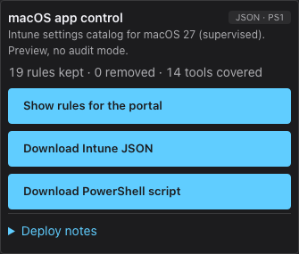
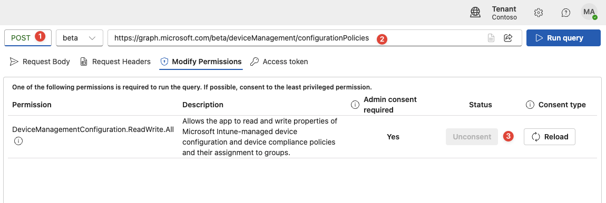
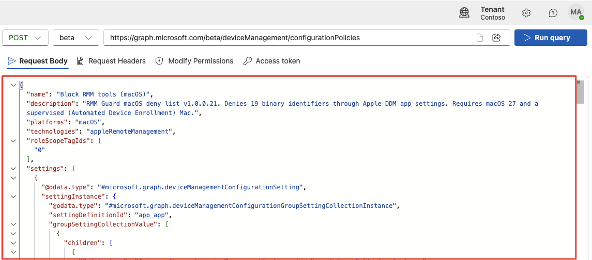
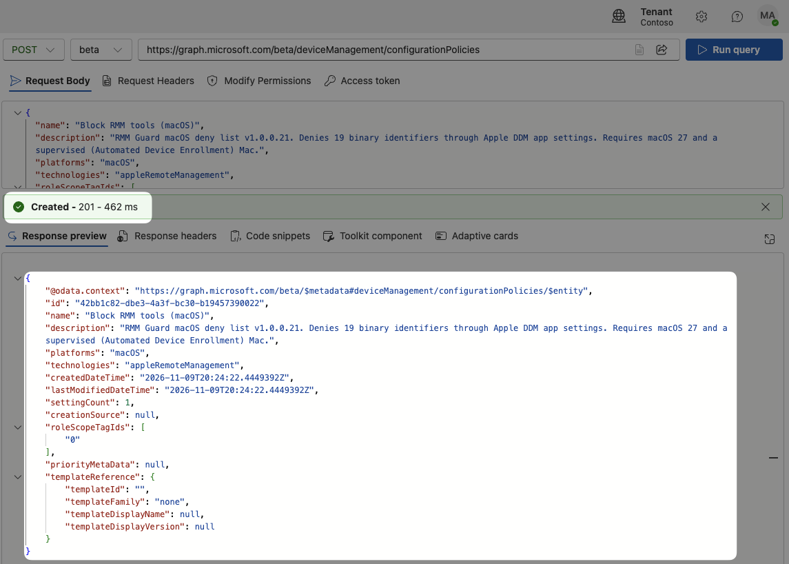
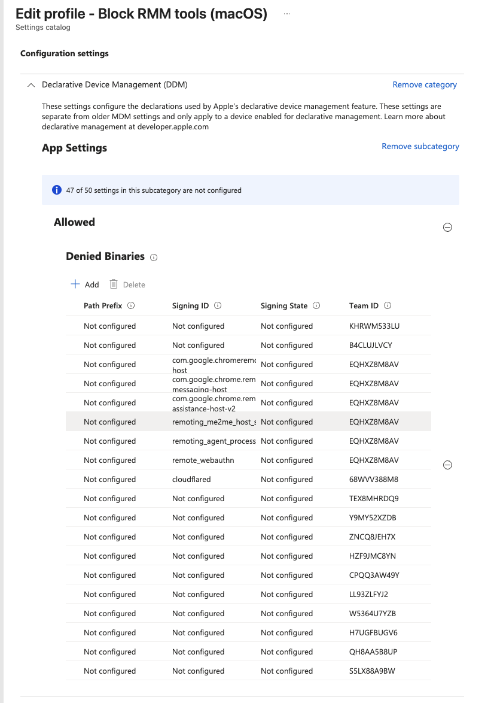
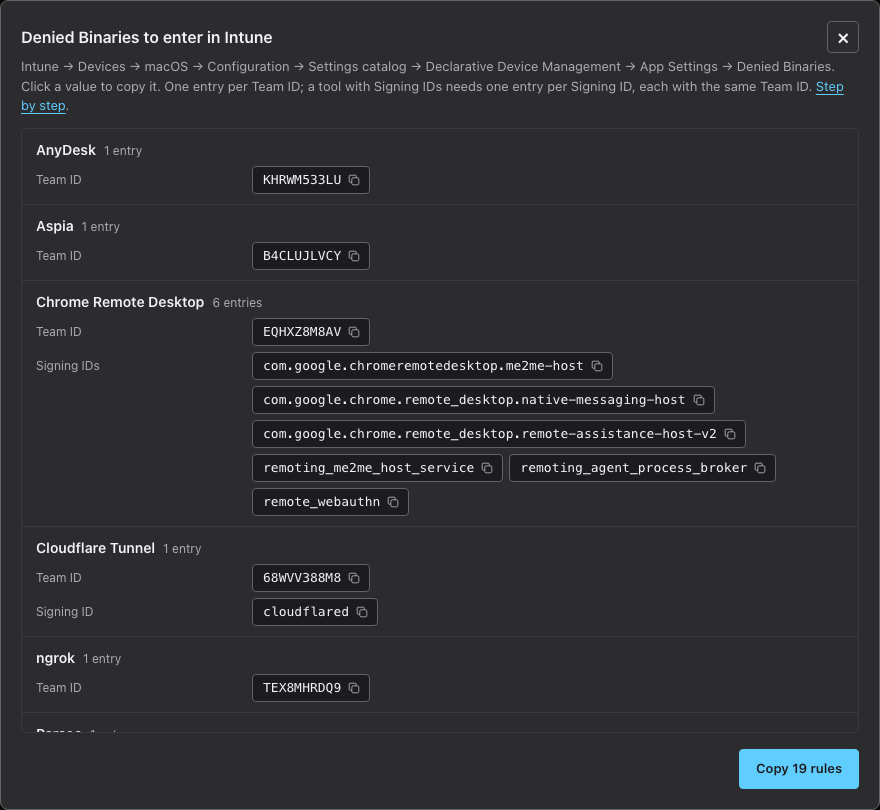
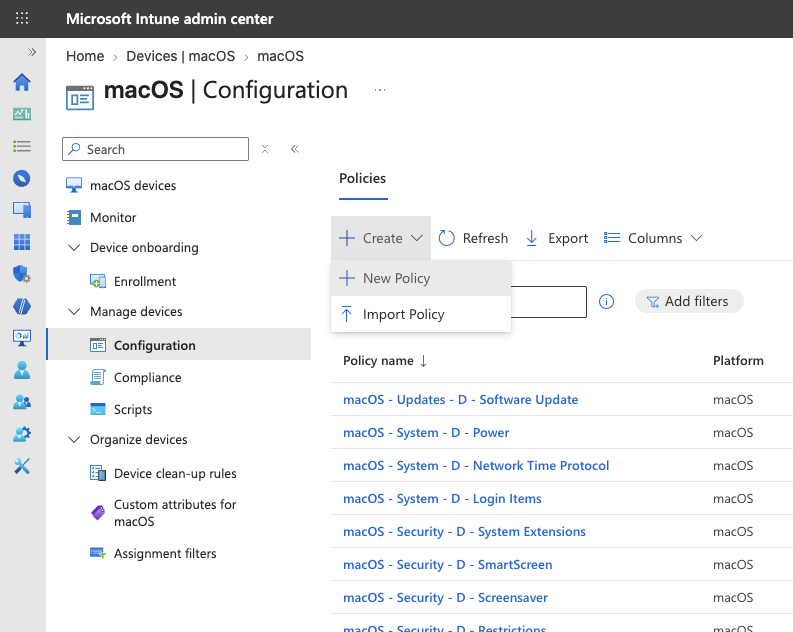
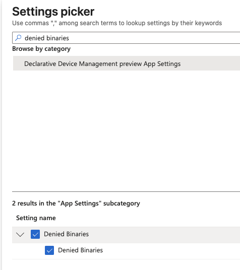
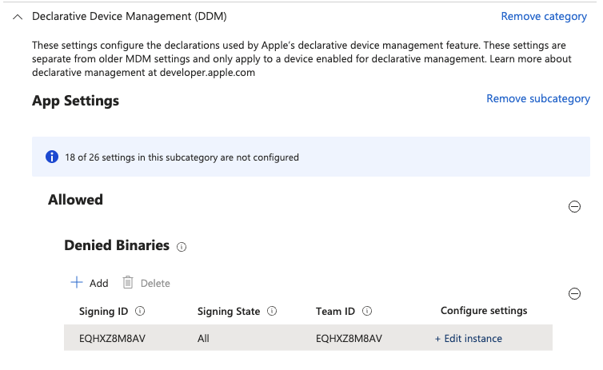
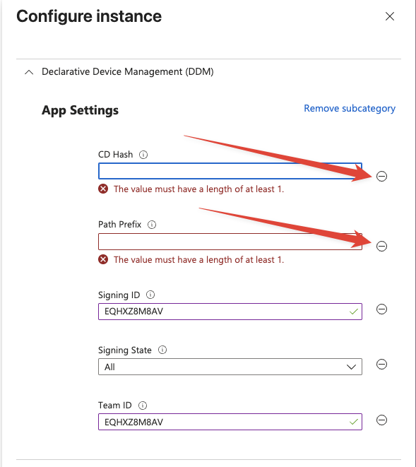

Deploy macOS app control
Denies the remote tools you have not excluded on macOS 27, by the vendor's code signature, through Intune's App Settings → Denied Binaries.
Exclude trusted tools on the RMM page first. Windows and macOS are both on by default; the macOS card in the download panel gives you everything this guide uses.
1. Requirements
- macOS 27 or newer. Older Macs ignore the policy.
- A supervised Mac, enrolled through Automated Device Enrollment (Apple Business Manager). User-enrolled Macs do not receive it.
- Intune role with rights on device configuration. Option 1 also needs consent to the Graph permission
DeviceManagementConfiguration.ReadWrite.All.
2. Pick a route
On Windows you upload one XML file into an App Control for Business policy and you are done. The macOS policy is a settings catalog profile, and the Intune portal has no file upload for those. Every denied binary is a separate entry with a Team ID, so you either create the policy through Graph in one request, or type each entry by hand.
- Option 1, Graph Explorer (recommended): download Intune JSON from the macOS card and post it once. The policy appears in Intune with every entry filled in. Nothing to retype, no typos, and a changed list is a new download.
- Option 2, Intune portal: create the settings catalog profile by hand and type every Team ID and Signing ID from Show rules for the portal. Fine for a short list; with the full list it is many entries and one mistake invalidates the whole policy on the Mac.
Both routes end in the same policy. Assign and verify it the same way (steps 5 and 6).
3. Option 1: Graph Explorer
- In the macOS card, select Download Intune JSON. The file
RMM_Denied_Binaries_Intune.jsonis the complete policy: name, platform, and one Denied Binaries entry per rule left after your exclusions.
- Open Graph Explorer and sign in with the account icon at the top right, using your Intune administrator account. Without signing in you are on Microsoft's sample tenant.
- Set the method to POST, the version to beta and the URL to
https://graph.microsoft.com/beta/deviceManagement/configurationPolicies. Graph Explorer now knows which permission this request needs. - Open the Modify permissions tab. It lists
DeviceManagementConfiguration.ReadWrite.Allfor this request. If its status is not consented yet, select Consent; in most tenants this is already done.
- Open the downloaded JSON file in a text editor, select everything and copy it. In Graph Explorer, open the Request body tab and paste it there, replacing whatever the tab contained.

- Select Run query. Created - 201 with the policy's
idin the response means the policy exists.
- In Intune → Devices → macOS → Configuration, open Block RMM tools (macOS). The overview shows Allowed with nothing under it: the portal does not list Denied Binaries entries in that view. Select Edit next to Configuration settings and the table shows every entry with its Team ID and Signing ID. It is not assigned yet: continue with step 5.

Prefer PowerShell? The same request with the Graph SDK:
Connect-MgGraph -Scopes DeviceManagementConfiguration.ReadWrite.All
$body = Get-Content .\RMM_Denied_Binaries_Intune.json -Raw
Invoke-MgGraphRequest -Method POST -Uri "https://graph.microsoft.com/beta/deviceManagement/configurationPolicies" -Body $body -ContentType "application/json"To change the list later, exclude or include tools on the RMM page, download again and post again. Then assign the new policy and delete the old one, so a Mac never receives two deny lists.
4. Option 2: Intune portal
Where the values come from. In the macOS card, select Show rules for the portal. The dialog lists one row per Denied Binaries entry you need to create: the Team ID, the Signing ID when one is required, and the tool it belongs to. Copy list puts it on your clipboard as a table. Tools you excluded are already left out. The same values are visible per tool under macOS denied binaries in the tool list.

- Intune → Devices → macOS → Configuration → Create → New policy. Platform macOS, profile type Settings catalog, Create.

- Name it, for example Block RMM (macOS). Next.
- Select Add settings. In the settings picker, search for denied binaries, select the App Settings subcategory and tick Denied Binaries only. Close the picker.

- For every row in the dialog, select Add under Denied Binaries. A table row appears with Edit instance at the right.

- Select Edit instance. A pane opens with five fields. Fill in Team ID; fill in Signing ID only when the row shows one (Chrome Remote Desktop, Cloudflare Tunnel). Leave Signing State on All. Remove every field you leave empty with the minus next to it: an empty field shows "The value must have a length of at least 1" and blocks saving.

- Repeat for every row in the dialog. Check that the number of table rows equals the number of rows in the dialog, then Next and continue with step 5.
5. Assign
Set scope tags if needed. Assign your pilot device group of supervised Macs. Review + create → Create, or Review + save on the policy that Graph created.
Keep one deny policy per Mac. Two policies are merged into one list, so a tool you excluded in one is still denied by the other.
6. Verify
- Sync the pilot Mac. In Intune, the policy's Per-setting status shows Succeeded. If every setting shows Noncompliant, one entry is missing its Team ID.
- Launch a denied tool. macOS closes it and shows that the app is not allowed by your organisation.
- Launch an excluded tool. It must start normally.
- On the Mac,
log show --last 10m --predicate 'subsystem == "com.apple.ManagedClient"' | grep -i DENIEDlists the blocked executions.
Expand assignments after testing.
7. Add a tool
Only tools whose Mac code signature was checked against a real installer are listed. To add one, install it on a Mac and read the signature of the app and of every helper, agent or service it installs:
codesign -dvvv "/Applications/Example.app" 2>&1 | grep -E "^(Identifier|TeamIdentifier)="TeamIdentifier is the Team ID. Use it alone when the vendor only makes remote tools. When the same Team ID also signs unrelated software (Google, Microsoft, Cloudflare), add the Identifier of each remote binary as a Signing ID, otherwise every app from that vendor is blocked.
Send the output and the installer URL through a GitHub issue , or add a macos block to the product in products.json:
"macos": {
"rules": [{ "teamId": "H7UGFBUGV6" }],
"cask": "teamviewer",
"source": "https://download.teamviewer.com/download/TeamViewer.dmg",
"verified": "2026-11-08"
}Tools that have a Homebrew cask are picked up by the monthly sync automatically: it reads the installer's signature on a macOS runner and proposes the rule in the lolRMM pull request, and re-checks every existing Team ID each month.